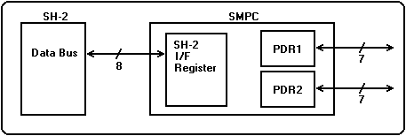
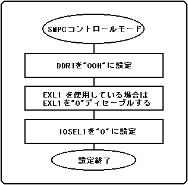
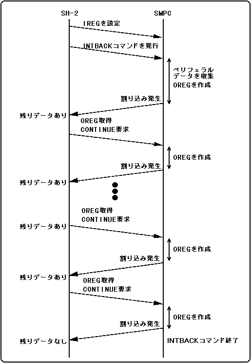
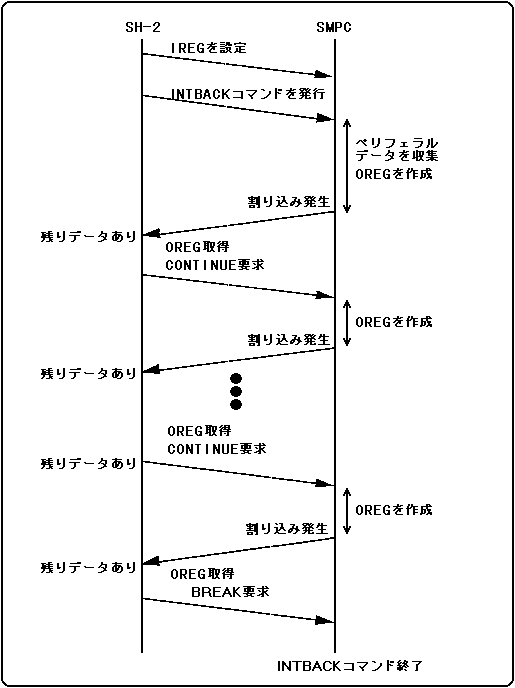

★HARDWARE Manual
★SMPCユーザーズマニュアル
★HARDWARE Manual
★SMPCユーザーズマニュアル
図3.1 SMPCコントロールモードのブロック図

図3.2 SMPCコントロールモードの設定例

レジスタ名 | 設定値 | 内 容 |
IOSEL1/2 | 0H | SMPCコントロールモード |
EXL1/2 | 0H | PAD割り込み、VDP2外部ラッチディセーブル |
DDR1/2 | 00H | 全ビット入力 |
発行する要求 | 受付条件 | SMPC動作 | |
コンティ | ブレイク | ||
× | × | 保留 | 要求待ち |
× | ○ | ブレイク | ペリフェラルデータ収集中断、INTBACKコマンドを終了 |
○ | × | コンティニュー | 続きのペリフェラルデータ収集 |
○ | ○ | 禁止 | 保証なし |
図3.3 全ペリフェラルデータ取得シーケンス

図3.4 ブレイク要求によるペリフェラルデータ取得キャンセルシーケンス

★HARDWARE Manual
★SMPCユーザーズマニュアル